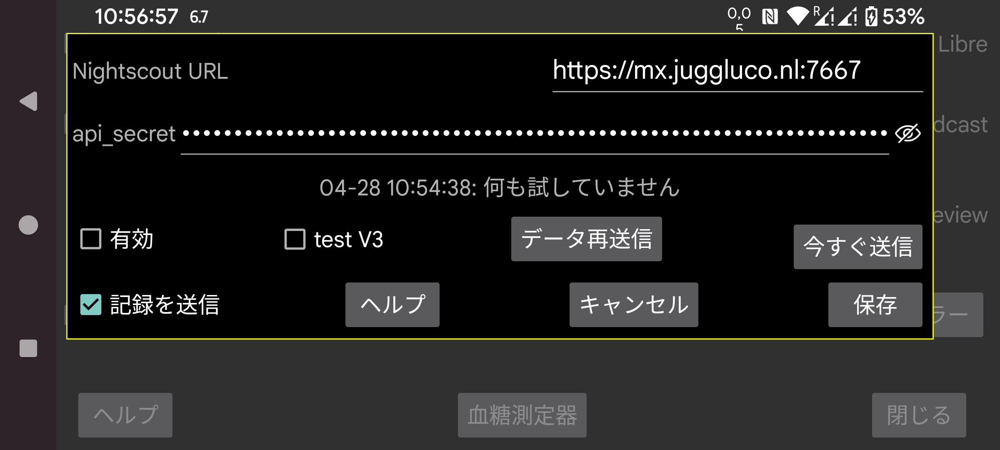

ar be de es fr hi it ja nl pl ru sv tr uk uz zh en
ほとんどの場合、Juggluco の Web サーバーまたは juggluco-server も使用できます。Nightscout の Web ページを表示するだけのいくつかのアプリのみが cgm-remote-monitor を必要とします。Juggluco 7.4.1 の Web サーバーで AAPS や AAPSClient さえ使用できます。
すべてのストリーム値は、到着した時点で Nightscout サーバーにアップロードされます。複数のセンサーを使用している場合、すべてのセンサーのすべての値がアップロードされます。一部の Garmin ウォッチアプリ/フェイス/ウィジェットは、値が 5 分間隔であると想定しています。1 分間隔の血糖値を受信すると、曲線の最後の 5 分の 1 のみが表示されます。そのため、Juggluco に組み込まれた Web サーバーは、「interval=secs」がより低い値に設定されている場合を除き、値を 5 分間隔にスペースします。
URL: URL は https://hostname:port の形式である必要があります。例: https://myname.herokuapp.com:6789
有効: アップローダーをオン
test V3: Juggluco に api/v3 を使って Nightscout にアップロードさせます。以前 V1 アップロードを受信した Nightscout サーバーへのアップロードには使わないでください。また、以前 V3 アップロードを受信した Nightscout サーバーには V1 アップロードを送信しないでください。api_secret の代わりに、treatment と entries のアップロード権限を持つ アクセストークン を指定する必要があります。Nightscout の Web インターフェースの管理者ツールで作成できます。(他に V3 アップローダーが存在しないため「テスト」と呼ばれています。通常は V1 が使用されます。)
記録を送信: 記録も treatment として Nightscout に送信します。チェックボックスをタッチすると、各ラベルが Nightscout で何を意味するかを指定できるダイアログが表示されます。これらの仕様は Juggluco の Web サーバー(左メニュー → 設定 → データ交換 → Web サーバー)と共有されます。すべてのラベルが扱われている場合のみ、「記録を送信」をチェックできます。後で新しいラベルを追加する場合、それで何をするかを指定することを忘れないでください。Nightscout のバグにより、古い時刻の挿入や削除は、新しい時刻の項目が追加された後にのみ表示されます。これは、Nightscout への送信頻度を下げる方が良いことを意味します。現在は、ユーザーがディスプレイをオフにしたり別のアプリに移ったりして Juggluco から離れるたびに行われます。
データを再送信: すべてのデータを Nightscout サーバーに再度アップロード
今すぐ送信: 通常、データはセンサーまたはミラー接続から到着した時点ですぐに送信されます。何らかの理由で前回の試行が失敗した場合、このボタンを押します。
WearOS 版の Juggluco 4.15.0 以降も Nightscout に血糖値をアップロードできます。ほぼすべての場合、スマートフォンやタブレットの Juggluco 経由、またはコンピューター上の Juggluco サーバー経由で送信する方が良いです。Nightscout サーバーに接続できない場合は特にバッテリーを消耗するため、信頼できる接続がない場合は 有効 をオフにする方が良いです。
2 つのエラーメッセージがしばしば混乱を引き起こします。
エラーメッセージが「upload failure:」の後に何もない場合、考えられる原因は次のとおりです:
ネットワーク接続がオフ;
ホスト名のスペルが間違っている。
upload failure: java.io.FileNotFoundException: NIGHTSCOUTURL/api/v1/entries
ここで NIGHTSCOUTURL は「Nightscout URL」の後に入力されたサーバー URL を表します。
これは次のいずれかが原因です:
URL が間違ったサイトを指している。例えばホスト名の後のポートが欠けているため、Juggluco が通常の Web サーバーに接続している;
api_secret が間違っている;
NIGHTSCOUTURL に不要なパスが含まれている。例えば Nightscout URL が https://ahost.org:8887 なのに、https://ahost.org:8887/extra と入力した場合。